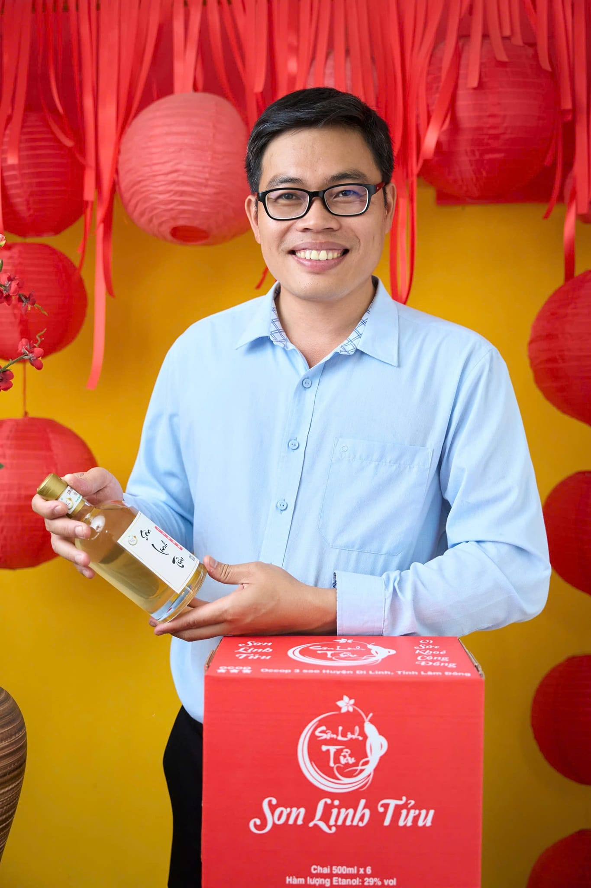

OCOP 3★
2023
2023
Câu chuyện thương hiệu
Nâng Tầm
Rượu Việt
Nằm giữa cao nguyên Di Linh lộng gió, Hộ kinh doanh Nguyễn Chí Sơn đã gìn giữ bí quyết chưng cất truyền thống qua nhiều thế hệ. Mỗi mẻ rượu là tâm huyết — từ hạt nếp được chọn lọc kỹ lưỡng đến chum sành ủ lâu năm.
Năm 2023, Sơn Linh Tửu chính thức nhận chứng nhận OCOP 3 Sao cấp huyện — minh chứng cho chất lượng và sự tận tâm không ngừng nghỉ với nghề.

Nguyễn Chí Sơn
Chủ cơ sở sản xuất
Thôn Lăng Kú, xã Gung Ré, Di Linh, Lâm Đồng